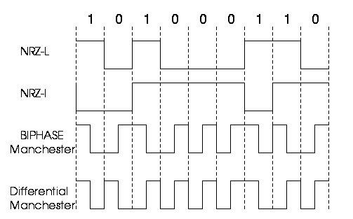

NRZ-I has an advantage over NRZ-L. Consider the situation when two data wires are wrongly connected in each other's
place.In NRZ-L all bit sequences will get reversed (B'coz voltage levels get swapped).Whereas in NAZ-I since bits are
recognized by transition the bits will be correctly interpreted. A disadvantage in NRZ codes is that a string of 0's
or 1's will prevent synchronization of transmitter clock with receiver clock and a separate clock line need to be
provided.

This scheme is known as 4B/5B. So here we convert 4-bits to 5-bits, ensuring at least one transition in them. The basic idea here is that 5-bit code selected must have :
The exact transformation is as follows :
| 4-bit Data | 5-bit code | 4-bit Data | 5-bit code |
|---|---|---|---|
| 0000 | 11110 | 1000 | 10010 |
| 0001 | 01001 | 1001 | 10011 |
| 0010 | 10100 | 1010 | 10110 |
| 0011 | 10101 | 1011 | 10111 |
| 0100 | 01010 | 1100 | 11010 |
| 0101 | 01011 | 1101 | 11011 |
| 0110 | 01110 | 1110 | 11100 |
| 0111 | 01111 | 1111 | 11101 |
Of the remaining 16 codes, 7 are invalid and others are used to send some control information like line idle(11111), line dead(00000), Halt(00100) etc.
There are other variants for this scheme viz. 5B/6B, 8B/10B etc. These have self suggesting names.
Transmission Techniques:
Start bit: It is prefixed to each byte and equals 0. Thus it ensures a transition from 1 to 0 at onset of transmission of byte.The leading edge of start bit is used as a reference for generating clock pulses at required sampling instants. Thus each onset of a byte results in resynchronization of receiver clock.
Stop bit: To ensure that transition from 1 to 0 is always present at beginning of a byte it is necessary that default state be 1. But there may be two bytes one immediately following the other and if last bit of first byte is 0, transition from 1 to 0 will not occur . Therefore a stop bit is suffixed to each byte equaling 1. It's duration is usually 1,1.5,2 bits.
Asynchronous transmission is simple and cheap but requires an overhead of 3 bits i.e. for 7 bit code 2 (start ,stop bits)+1 parity bit implying 30% overhead.However % can be reduced by sending larger blocks of data but then timing errors between receiver and sender can not be tolerated beyond [50/no. of bits in block] % (assuming sampling is done at middle of bit interval). It will not only result in incorrect sampling but also misaligned bit count i.e. a data bit can be mistaken for stop bit if receiver's clock is faster.
Bit Stuffing: Suppose our flag bits are 01111110 (six 1's). So the transmitter will always insert an extra 0 bit after each occurrence of five 1's (except for flags). After detecting a starting flag the receiver monitors the bit stream . If pattern of five 1's appear, the sixth is examined and if it is 0 it isdeleted else if it is 1 and next is 0 the combination is accepted as a flag. Similarly byte stuffing is used for byte oriented transmission.Here we use an escape sequence to prefix a byte similar to flag and 2 escape sequences if byte is itself a escape sequence.